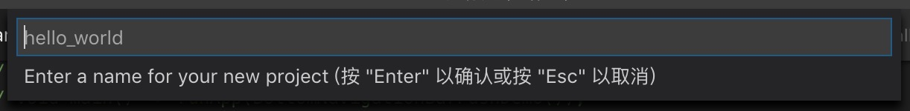
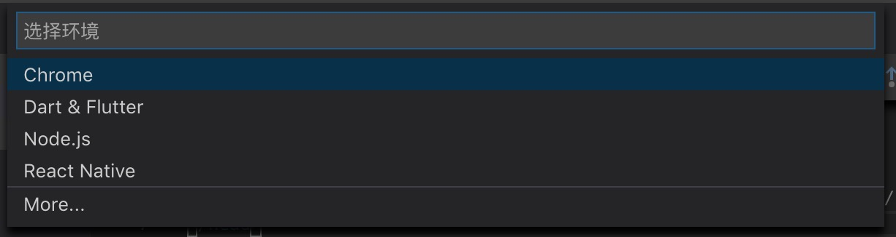
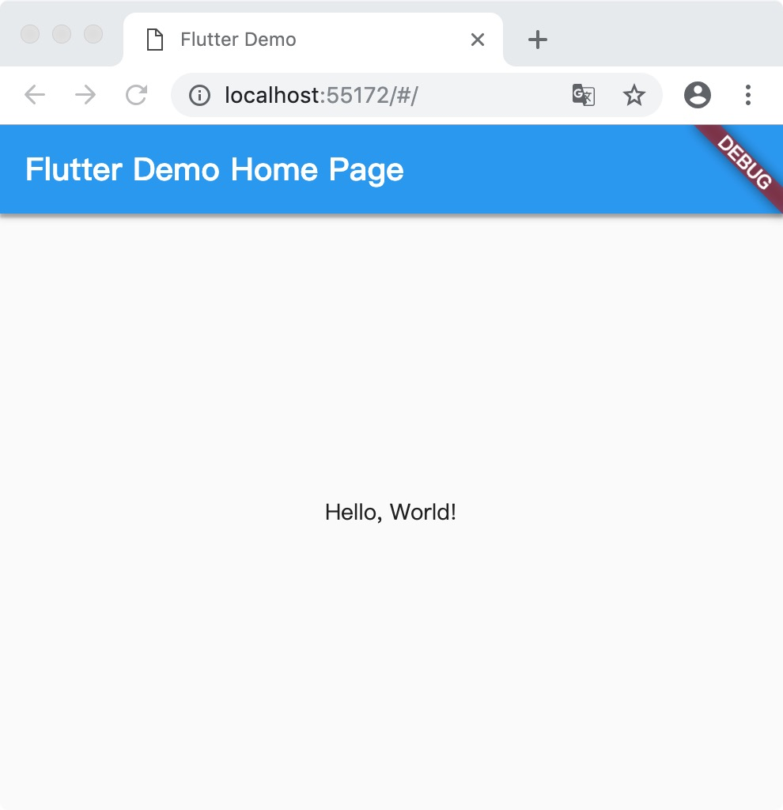
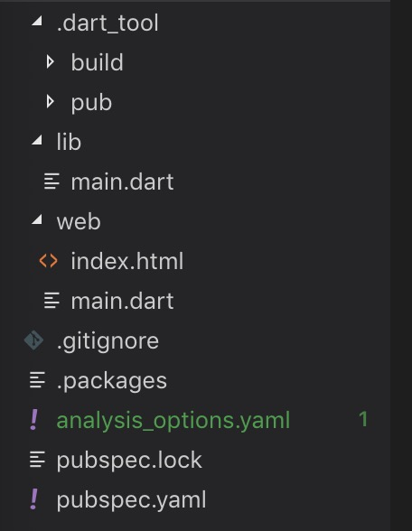

Flutter Web 项目 创建 & 运行
伴随着 Flutter v1.5.4 的发布，Flutter 终于支持众多平台的开发了。
在网上怎么搜索都没有找到关于更加具体的消息，我今天搜索了很久也没有任何收获。
很无助的看着 VSCode 的项目的页面，发现 Dart 语言什么时候更新到 v3.0 的，然后就好奇的进去看看更新的文档描述，然后就发现了 Flutter 支持 Web 项目的创建了，6666，从 Dart v3.0 开始。
Dart 官方文档 & Flutter Web 项目创建教程
VSCode 率先支持 Flutter Web 项目的创建！
在 VSCode 打开命令面板，输入命令：
>Flutter:New Web Project
然后稍等就可以看到下面的界面：

这个界面的意思的就是要你输入你的 web 项目的名字。不支持大写字母来命名。
然后就可以看到 VSCode 出现一个窗口让你选择项目保存在哪个目录下面。
（没有图片，绝非我的懒惰，是没有必要而已~）
然后 VSCode 会新建一个窗口来运行你的项目。
于此同时，会自动下载关联的库，如：
[你的项目名] pub get
Resolving dependencies...
+ analyzer 0.36.3
+ archive 2.0.8
+ args 1.5.1
+ async 2.2.0
+ bazel_worker 0.1.20
+ build 1.1.4
+ build_config 0.4.0
+ build_daemon 0.6.1
+ build_modules 2.1.2
+ build_resolvers 1.0.4
+ build_runner 1.4.0
+ build_runner_core 3.0.5
+ build_web_compilers 2.0.0
+ built_collection 4.2.2
+ built_value 6.5.0
+ charcode 1.1.2
+ code_builder 3.2.0
+ collection 1.14.11
+ convert 2.1.1
+ crypto 2.0.6
+ csslib 0.16.0
+ dart_style 1.2.7
+ fixnum 0.10.9
+ front_end 0.1.18
+ glob 1.1.7
+ graphs 0.2.0
+ html 0.14.0+2
+ http 0.12.0+2
+ http_multi_server 2.0.6
+ http_parser 3.1.3
+ intl 0.15.8
+ io 0.3.3
+ js 0.6.1+1
+ json_annotation 2.3.0
+ kernel 0.3.18
+ logging 0.11.3+2
+ matcher 0.12.5
+ meta 1.1.7
+ mime 0.9.6+2
+ package_config 1.0.5
+ package_resolver 1.0.10
+ path 1.6.2
+ pedantic 1.7.0
+ pool 1.4.0
+ protobuf 0.13.11
+ pub_semver 1.4.2
+ pubspec_parse 0.1.4
+ quiver 2.0.3
+ scratch_space 0.0.3+2
+ shelf 0.7.5
+ shelf_web_socket 0.2.3
+ source_maps 0.10.8
+ source_span 1.5.5
+ stack_trace 1.9.3
+ stream_channel 2.0.0
+ stream_transform 0.0.19
+ string_scanner 1.0.4
+ term_glyph 1.1.0
+ timing 0.1.1+1
+ typed_data 1.1.6
+ vector_math 2.0.8
+ watcher 0.9.7+10
+ web_socket_channel 1.0.12
+ yaml 2.1.15
Warning: You are using these overridden dependencies:
! flutter_web 0.0.0 from git https://github.com/flutter/flutter_web at acf4aa in packages/flutter_web
! flutter_web_ui 0.0.0 from git https://github.com/flutter/flutter_web at acf4aa in packages/flutter_web_ui
Changed 66 dependencies!
Precompiling executables...
Precompiled build_runner:graph_inspector.
Precompiled build_runner:build_runner.
exit code 0
上面的信息貌似是多余的，其实我滥竽充数而已~~
然后直接运行，VSCode 只需要按 F5 快捷键就行了。
然后你就可以看到 VSCode 弹出一个框让你选择运行项目的环境：

老铁，听我说，选 “ Dart & Flutter ” 就对了。
然后稍等一下吧，项目会编译，然后自动生成内容，其实就是 Dart 转换成 JavaScript 的过程。
Dart 原本就是（谷歌）想代替 JavaScript 而发明的，可以转换成 JavaScript 代码。
感觉 Dart 走了曲线救国的方式，终于走到这步 —— 代替 JavaScript。
最后，你会看到你系统默认的浏览器会弹出一个新的窗口来运行你的项目。（感觉刚开始有点慢吧。。。。）

下面我们来看看项目的目录：

web/index.html
<!DOCTYPE html>
<html lang="en">
<head>
<meta charset="UTF-8">
<title></title>
<script defer src="main.dart.js" type="application/javascript"></script>
</head>
<body>
</body>
</html>
web/main.dart
// Copyright 2019 The Chromium Authors. All rights reserved.
// Use of this source code is governed by a BSD-style license that can be
// found in the LICENSE file.
import 'package:flutter_web_ui/ui.dart' as ui;
import 'package:aaaaaaa/main.dart' as app;
main() async {
await ui.webOnlyInitializePlatform();
app.main();
}
lib/main.dart
import 'package:flutter_web/material.dart';
void main() => runApp(MyApp());
class MyApp extends StatelessWidget {
// This widget is the root of your application.
@override
Widget build(BuildContext context) {
return MaterialApp(
title: 'Flutter Demo',
theme: ThemeData(
primarySwatch: Colors.blue,
),
home: MyHomePage(title: 'Flutter Demo Home Page'),
);
}
}
class MyHomePage extends StatelessWidget {
MyHomePage({Key key, this.title}) : super(key: key);
final String title;
@override
Widget build(BuildContext context) {
// The Flutter framework has been optimized to make rerunning build methods
// fast, so that you can just rebuild anything that needs updating rather
// than having to individually change instances of widgets.
return Scaffold(
appBar: AppBar(
title: Text(title),
),
body: Center(
// Center is a layout widget. It takes a single child and positions it
// in the middle of the parent.
child: Column(
// Column is also layout widget. It takes a list of children and
// arranges them vertically. By default, it sizes itself to fit its
// children horizontally, and tries to be as tall as its parent.
//
// Invoke "debug painting" (choose the "Toggle Debug Paint" action
// from the Flutter Inspector in Android Studio, or the "Toggle Debug
// Paint" command in Visual Studio Code) to see the wireframe for each
// widget.
//
// Column has various properties to control how it sizes itself and
// how it positions its children. Here we use mainAxisAlignment to
// center the children vertically; the main axis here is the vertical
// axis because Columns are vertical (the cross axis would be
// horizontal).
mainAxisAlignment: MainAxisAlignment.center,
children: <Widget>[
Text(
'Hello, World!',
),
],
),
), // This trailing comma makes auto-formatting nicer for build methods.
);
}
}
本文就大致介绍到这里吧，不管怎么说 Flutter 跑在 Web 上面而且不是试验性质的，是正式版的，这是令人多么激动无比啊，我也情不自禁为其写下（全网）第一篇相关文章。
PS: 目前体现一般，有些提示可能还没有做的很好，还有修改过的地方保存后不能在网页上马上改变，非得在网页上刷新一下才行。。。。。。不过这些都是小问题，很容易修复好的。接下来就是写一些复杂的内容~~~~